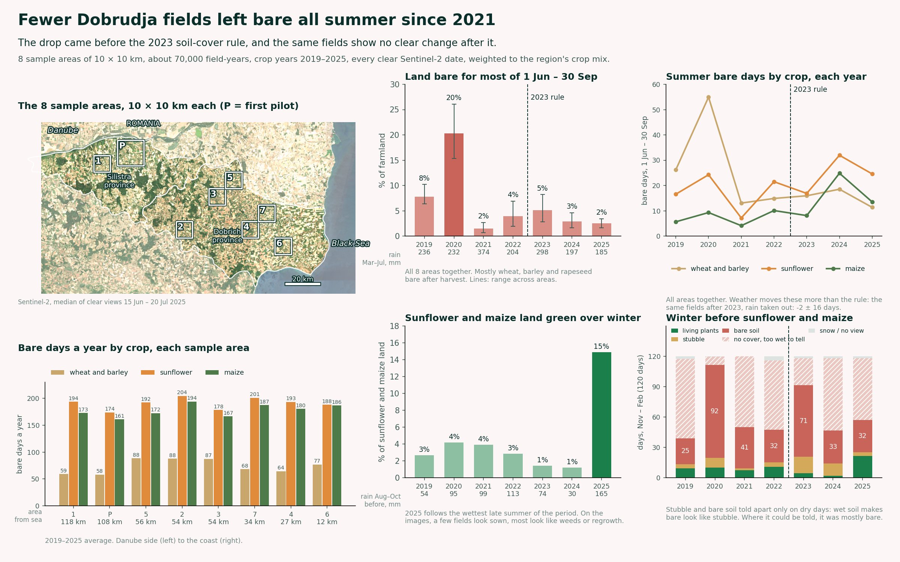
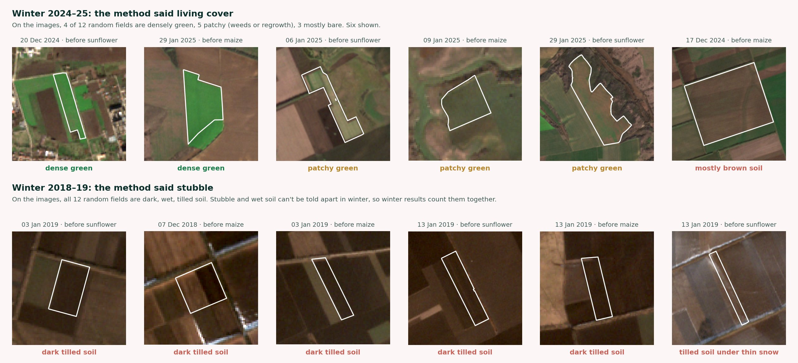

Bare soil loses carbon, dries out and blows away. Since 2023, EU farm payments come with a soil-cover rule, and in Bulgaria it asks farmers to keep at least 80% of their arable land covered from 1 June to 30 September. Stubble counts as cover. So I asked: how many days a year does each field actually lie bare, and did anything change after the rule?
I looked at Dobrudja, Bulgaria's grain belt, where wheat, sunflower and maize cover almost 500,000 ha. This page explains how I measured it, what I found, and where the method stops.

Open data in
About 10,000 fields a year, each year's crop from the register.
geopandas · GeoParquet · pyprojSample crop mix compared with the whole region, then results weighted back to it.
Cloud, shadow and snow masked. Greenness, near infrared and tillage index averaged over each field, about 64 clear dates a year.
STAC search · odc-stac · xarray · dask · NumPyDuplicate scenes from reprocessing removed, keeping the newest version.
Living plants, stubble, bare soil, snow or unknown, from the nearest clear image.
pandas · NumPyThresholds set on crop-calendar groups (89% and 97% accurate), then 15 random dates and 24 winter fields checked by eye.
Bare days, summer window, winter without living cover, standing water, rain and warmth.
pandas · Open-Meteo API · Sentinel-1 via Planetary ComputerStanding water only counts after real rain, and not in wheat during heading.
Weighted to the region's crop mix. Each field compared with itself before and after 2023.
pandas · NumPy least squares · bootstrapUncertainty from 7 yearly values and from leaving areas out, not from 70,000 fields.
Results out
In more detail:
| 2019 | 2020 | 2021 to 2025 | |
|---|---|---|---|
| Farmland bare for most of 1 June to 30 September | 8% | 20% | 1.5 to 5% |
| Spring rain, March to July | 236 mm | 232 mm | 185 to 374 mm |
| Result | |
|---|---|
| Same fields after 2023, summer bare days | −2 ± 16 days |
| Same fields after 2023, bare days over the whole year | −5 ± 24 days |
| Bare days a year, wheat and barley | about 60 to 90 |
| Bare days a year, sunflower and maize | about 160 to 200 |
| Winter days with no living cover before sunflower and maize (of 120) | 97 to 117 |
| Of those, stubble where the soil was dry enough to tell | 5 to 27% |
| Sunflower and maize land green over winter, 2019 to 2024 | 1 to 4% |
| Same, 2025 | 15% |
| Farmland with standing water after rain, any year | under 1% |
In 2019, 8% of the farmland was bare for most of the summer, and in the dry year 2020 it was 20%. Almost all of it was wheat, barley and rapeseed after harvest: fields tilled soon after harvest and left open until autumn sowing, or stubble so thin after the drought that it reads as bare soil. From 2021 on it has stayed between 1.5% and 5%. That drop happened two years before the rule. When I compare the same fields with themselves and take out the weather, the years after 2023 are no different: −2 ± 16 days in summer. Weather moves these numbers far more than the rule does.
Wheat and barley are harvested in July and their stubble counts as cover, so they have about 60 to 90 bare days a year. Sunflower and maize leave the soil open from autumn to late spring, about 160 to 200 days. Between areas the differences are smaller. The two areas by the Danube are the least bare and one central area is the barest, but there is no clean pattern from the Danube to the coast.
Since August 2024 the Bulgarian rule covers summer only. Winter is when the soil is most exposed: before sunflower and maize there is no living cover on most of the 120 days from November to February. Telling stubble from bare soil in winter is harder, because wet soil makes bare ground look like stubble. So I only made that call on days when the topsoil was dry. On those days it was mostly bare soil: stubble made up only 5 to 27% of them, depending on the year.
In winter 2024 to 2025, 15% of the land waiting for sunflower or maize was green for most of the winter, against 1 to 4% in every earlier year. It followed by far the wettest late summer of the period. On the images, a few of these fields look sown, as a cover crop would be, but most look like weeds and cereal regrowth. The register only records the main crop, so satellite data alone can't prove a cover crop.

This measures how long the soil lies bare, field by field. It can't say whether a farm meets the rule: the rule applies to 80% of each holding, and the public register doesn't say which fields belong to the same farm. No farm is named or can be identified here.
The same steps run wall to wall. On a laptop, the whole region would take about 16 to 20 hours of processing. Running it in the cloud next to the imagery, or server-side on the Copernicus Data Space with openEO, brings that down to about an hour. A new region needs its own threshold check and spot-check before its numbers can be trusted.
| Fields and crops | Bulgarian farm parcel register (IACS), 2018 to 2025, via the ESA WorldCereal reference data |
| Optical imagery | Copernicus Sentinel-2 L2A via Earth Search |
| Radar | Copernicus Sentinel-1 RTC via Microsoft Planetary Computer |
| Snow | NASA MODIS MOD10A1 daily snow cover |
| Weather | ERA5-Land and ERA5 (Copernicus Climate Change Service) via Open-Meteo |
| Water | OpenStreetMap contributors, ODbL, and JRC Global Surface Water |
| Boundaries | geoBoundaries, ODbL, and Natural Earth coastline |
The code runs end to end from these sources. If you'd like soil-cover monitoring like this for your own fields, a carbon programme or a whole region, get in touch.